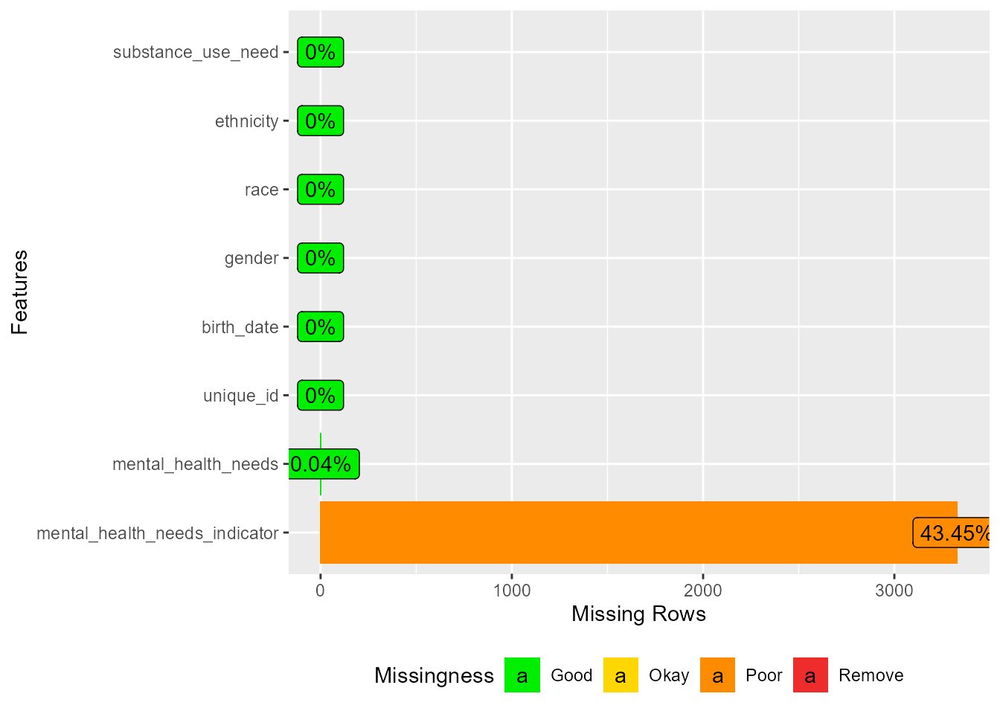
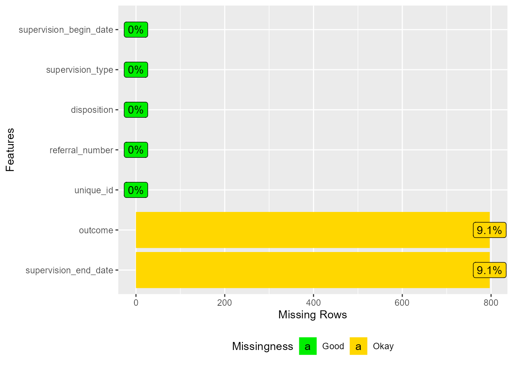
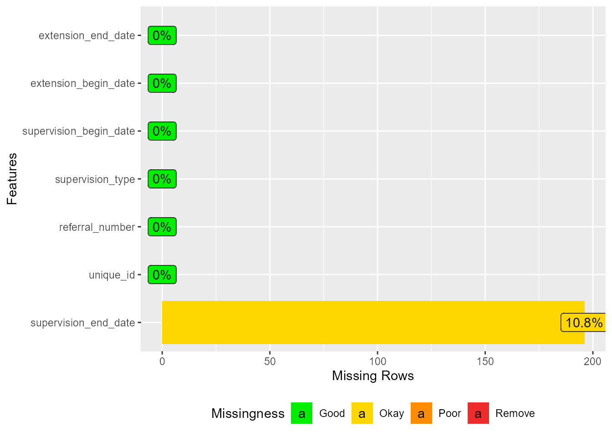
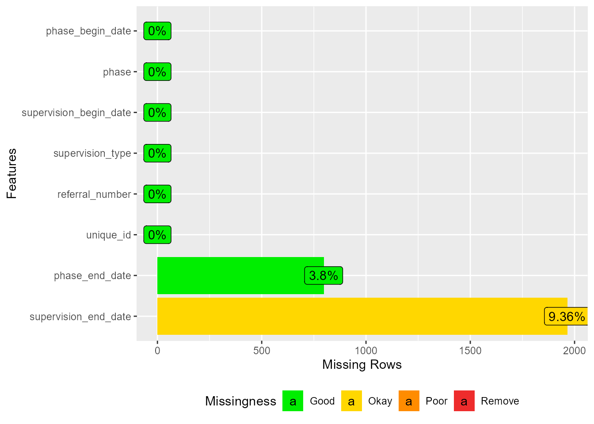
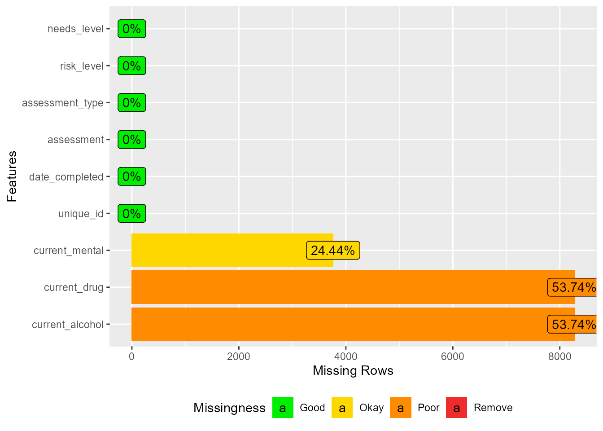
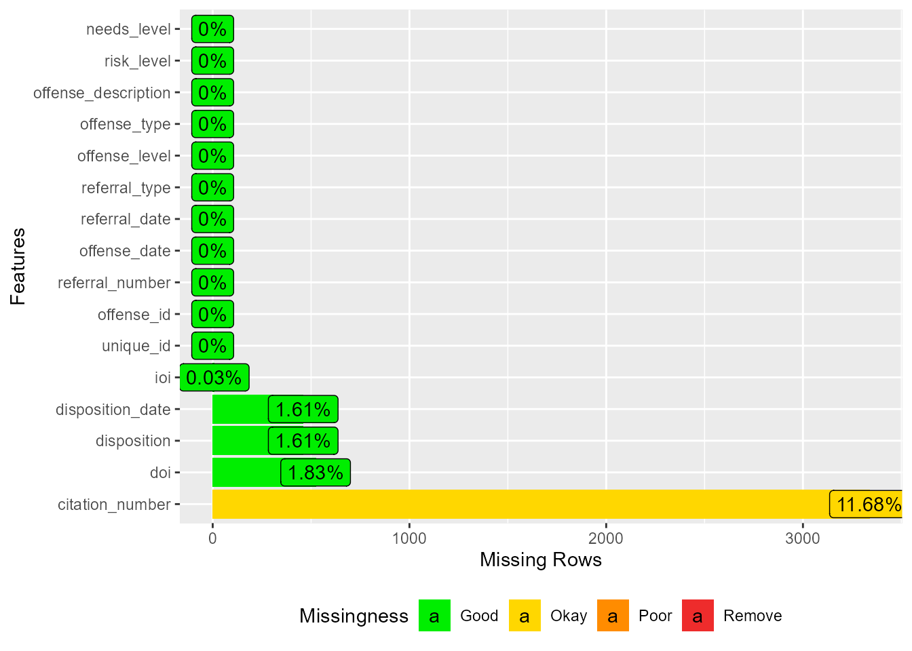
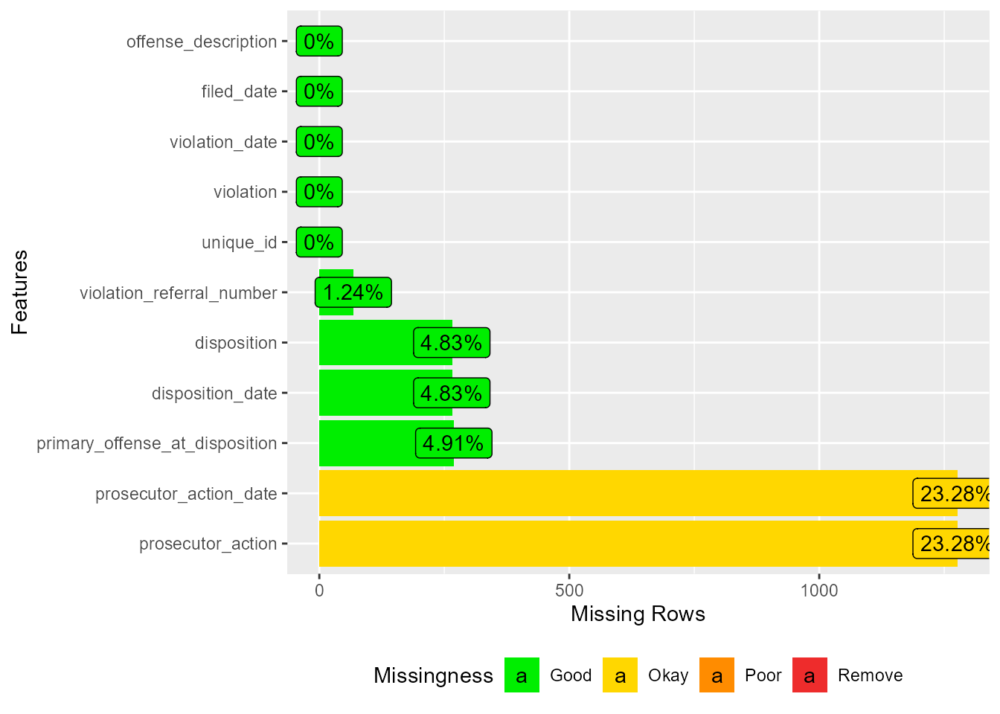
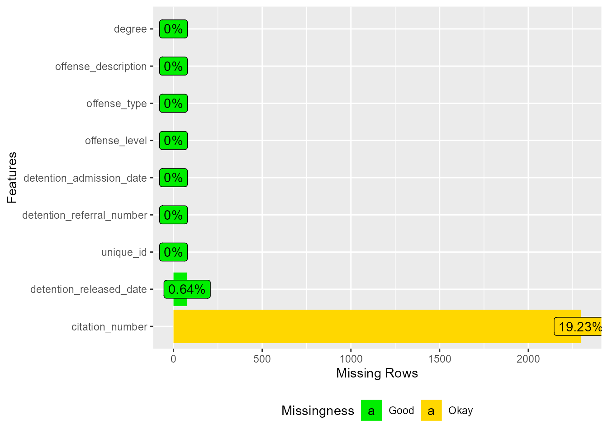
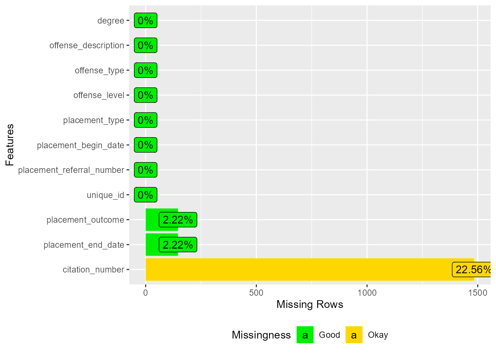

| Measure | Count |
|---|---|
| rows | 7,661 |
| columns | 8 |
| discrete_columns | 8 |
| continuous_columns | 0 |
| all_missing_columns | 0 |
| total_missing_values | 3,332 |
| complete_rows | 4,332 |
| total_observations | 61,288 |
| memory_usage | 985,568 |
JJ AV Dallas County Data File Codebooks
Data Sample: Supervision records of DCJD juveniles on either Court-Ordered Probation/Permanent Probation/Deferred Prosecution at any point from 10/1/2017 through 9/30/2022
For all missing data plots, here are the % missingness categories: “Good” <= 5% missing, “OK” <= 40% missing, “Bad” <= 80% missing, and “Remove” = 100% missing
This syntax pulls in all data files provided by Dallas County stored as a series of Excel file tabs – creates high-level codebooks for each using the DataExplorer package (https://boxuancui.github.io/DataExplorer/index.html). File names reflect the names provided by Dallas County.
Child File (base youth-level sample demographic file)
Dallas County Description: Demographic records of all of the juveniles listed on the Supervision sheet
Child, Data Overview
Child, Fields Included
| Variable | Variable Name in Analysis | Description |
|---|---|---|
| UniqueID | unique_id | Juvenile's unique identifying number |
| BirthDate | birth_date | Birth date of the listed juvenile |
| Gender | gender | Gender of record for the listed juvenile |
| Race | race | Race of record for the listed juvenile |
| Ethnicity | ethnicity | Ethnicity of record for the listed juvenile |
| MentalHealthNeeds | mental_health_needs | Mental health needs status of the listed juvenile |
| MentalHealthNeedsIndicator | mental_health_needs_indicator | Listed mental health needs indicator for |
| SubstanceUseNeed | substance_use_need | Whether the juvenile has ever been identified on an offense referral as needing substance abuse services |
Child, Missing Data

Supervision File
Dallas County Description: Supervision records of DCJD juveniles on either Court-Ordered Probation/Permanent Probation/Deferred Prosecution at any point from 10/1/2017 through 9/30/2022
Supervision, Data Overview
| Measure | Count |
|---|---|
| rows | 8,761 |
| columns | 7 |
| discrete_columns | 7 |
| continuous_columns | 0 |
| all_missing_columns | 0 |
| total_missing_values | 1,594 |
| complete_rows | 7,964 |
| total_observations | 61,327 |
| memory_usage | 1,537,320 |
Supervision, Fields Included
| Variable | Variable Name in Analysis | Description |
|---|---|---|
| UniqueID | unique_id | Juvenile's unique identifying number |
| ReferralNumber | referral_number | Identifying number of the referral attached to the listed supervision record |
| Disposition | disposition | Primary disposition of the referral attached to the listed supervision record |
| SupervisionType | supervision_type | Supervision type of the listed supervision record |
| SupervisionBeginDate | supervision_begin_date | Date the listed supervision began |
| SupervisionEndDate | supervision_end_date | Date the listed supervision ended (if any) |
| Outcome | outcome | Outcome of the listed supervision record (if any) |
Supervision, Missing Data

Supervision Extension File
Dallas County Description: Records of every listed supervision extension belonging to supervision records in the Supervision sheet
Supervision Extension, Data Overview
| Measure | Count |
|---|---|
| rows | 1,814 |
| columns | 7 |
| discrete_columns | 7 |
| continuous_columns | 0 |
| all_missing_columns | 0 |
| total_missing_values | 196 |
| complete_rows | 1,618 |
| total_observations | 12,698 |
| memory_usage | 268,600 |
Supervision Extension, Fields Included
| Variable | Variable Name in Analysis | Description |
|---|---|---|
| UniqueID | unique_id | Juvenile's unique identifying number |
| ReferralNumber | referral_number | Identifying number of the referral attached to the listed supervision record |
| SupervisionType | supervision_type | Supervision type of the listed supervision record |
| SupervisionBeginDate | supervision_begin_date | Date the listed supervision began |
| SupervisionEndDate | supervision_end_date | Date the listed supervision ended (if any) |
| ExtensionBeginDate | extension_begin_date | Date the listed supervision extension began |
| ExtensionEndDate | extension_end_date | Date the listed supervision extension ended (or is estimated to end) |
Supervision Extension, Missing Data

Supervision Level File
Dallas County Description: Records of every listed supervision phase level belonging to supervision records in the Supervision sheet
Supervision Level, Data Overview
| Measure | Count |
|---|---|
| rows | 20,982 |
| columns | 8 |
| discrete_columns | 8 |
| continuous_columns | 0 |
| all_missing_columns | 0 |
| total_missing_values | 2,761 |
| complete_rows | 19,018 |
| total_observations | 167,856 |
| memory_usage | 2,388,648 |
Supervision Level, Fields Included
| Variable | Variable Name in Analysis | Description |
|---|---|---|
| UniqueID | unique_id | Juvenile's unique identifying number |
| ReferralNumber | referral_number | Identifying number of the referral attached to the listed supervision record |
| SupervisionType | supervision_type | Supervision type of the listed supervision record |
| SupervisionBeginDate | supervision_begin_date | Date the listed supervision began |
| SupervisionEndDate | supervision_end_date | Date the listed supervision ended (if any) |
| Phase | phase | Supervision phase level during the listed supervision record |
| PhaseBeginDate | phase_begin_date | Date the listed phase level began |
| PhaseEndDate | phase_end_date | Date the listed phase level ended (if any) |
Supervision Level, Missing Data

Assessment File
Dallas County Description: PACT Assessment records of all of the juveniles listed on the Supervision sheet who also have a PACT history
Assessment, Data Overview
| Measure | Count |
|---|---|
| rows | 15,391 |
| columns | 9 |
| discrete_columns | 9 |
| continuous_columns | 0 |
| all_missing_columns | 0 |
| total_missing_values | 20,304 |
| complete_rows | 3,358 |
| total_observations | 138,519 |
| memory_usage | 1,403,856 |
Assessment, Fields Included
| Variable | Variable Name in Analysis | Description |
|---|---|---|
| UniqueID | unique_id | Juvenile's unique identifying number |
| DateCompleted | date_completed | Date the PACT assessment was completed |
| Assessment | assessment | PACT |
| AssessmentType | assessment_type | Indicates whether the PACT was a Pre-Screen or Full-Screen |
| Risk Level | risk_level | Calculated risk level at the time of the completed PACT assessment |
| Needs Level | needs_level | Calculated needs level at the time of the completed PACT assessment |
| CurrentMental | current_mental | Response for DOMAIN_9B__CURRENT_MENTAL_HEALTH__1_CURRENT_MENTAL_HEALTH_PROBLEM_STATUS of the PACT assessment |
| CurrentAlcohol | current_alcohol | Response for DOMAIN_8B__CURRENT_ALCOHOL_AND_DRUGS__2_CURRENT_ALCOHOL_USE of the PACT assessment |
| CurrentDrug | current_drug | Response for DOMAIN_8B__CURRENT_ALCOHOL_AND_DRUGS__3_CURRENT_DRUG_USE of the PACT assessment |
Assessment, Missing Data

Offenses File
Dallas County Description: Entire offense history (as of 12/23/2022) of all of the juveniles listed on the Supervision sheet
Offenses, Data Overview
| Measure | Count |
|---|---|
| rows | 28,567 |
| columns | 16 |
| discrete_columns | 16 |
| continuous_columns | 0 |
| all_missing_columns | 0 |
| total_missing_values | 4,788 |
| complete_rows | 24,820 |
| total_observations | 457,072 |
| memory_usage | 8,229,808 |
Offenses, Fields Included
| Variable | Variable Name in Analysis | Description |
|---|---|---|
| UniqueID | unique_id | Juvenile's unique identifying number |
| OffenseId | offense_id | TechShare.Juvenile assigned GUID for the listed offense |
| ReferralNumber | referral_number | Identifying number of the referral to which the listed offense is attached |
| OffenseDate | offense_date | Offense date of the listed offense |
| ReferralDate | referral_date | Date of the referral to which the listed offense is attached |
| ReferralType | referral_type | Referral type of the referral to which the listed offense is attached |
| CitationNumber | citation_number | Citation number within DPS Statute of the listed offense |
| OffenseLevel | offense_level | Offense level of the listed offense (Felony, Misdemeanor, Contempt, Violation of Court Order, CINS, Other) |
| OffenseType | offense_type | Offense type of the listed offense (Homicide, Sexual Assault, Robbery, Theft, Assaultive, Drug Offenses, etc.) |
| OffenseDescription | offense_description | Offense description of the listed offense |
| Disposition | disposition | Referral disposition of the listed offense |
| DispositionDate | disposition_date | Date of the referral disposition of the listed offense |
| RiskLevel | risk_level | Listed risk level at the time of referral disposition |
| NeedsLevel | needs_level | Listed needs level at the time of referral disposition |
| IOI | ioi | Intake Offense Indicator level of the listed offense |
| DOI | doi | Disposition Offense Indicator level of the listed offense |
Offenses, Missing Data

Violations File
Dallas County Description: Entire violation offense history (as of 12/23/2022) of all of the juveniles listed on the Supervision sheet
Violations, Data Overview
| Measure | Count |
|---|---|
| rows | 5,482 |
| columns | 11 |
| discrete_columns | 11 |
| continuous_columns | 0 |
| all_missing_columns | 0 |
| total_missing_values | 3,419 |
| complete_rows | 4,076 |
| total_observations | 60,302 |
| memory_usage | 828,928 |
Violations, Fields Included
| Variable | Variable Name in Analysis | Description |
|---|---|---|
| UniqueID | unique_id | Juvenile's unique identifying number |
| ViolationReferralNumber | violation_referral_number | Identifying number of the referral to which the listed VOP offense is attached (if any) |
| Violation | violation | Listed violation reason of the listed VOP offense |
| ViolationDate | violation_date | Listed violation date of the listed violation |
| FiledDate | filed_date | Date the listed violation was filed (if any) |
| ProsecutorAction | prosecutor_action | Prosecutor action (if any) for the listed VOP offense |
| ProsecutorActionDate | prosecutor_action_date | Date of the prosecutor action (if any) for the listed VOP offense |
| OffenseDescription | offense_description | Offense description of the listed VOP offense |
| DispositionDate | disposition_date | Disposition date (if any) of the listed VOP offense |
| Disposition | disposition | Primary disposition (if any) of the listed VOP offense |
| PrimaryOffenseAtDisposition | primary_offense_at_disposition | Whether the listed VOP offense was the primary offense at time of disposition |
Violations, Missing Data

Detentions File
Dallas County Description: Entire detention history (as of 12/23/2022) of all of the juveniles listed on the Supervision sheet
Detentions, Data Overview
| Measure | Count |
|---|---|
| rows | 11,947 |
| columns | 9 |
| discrete_columns | 9 |
| continuous_columns | 0 |
| all_missing_columns | 0 |
| total_missing_values | 2,374 |
| complete_rows | 9,609 |
| total_observations | 107,523 |
| memory_usage | 1,939,312 |
Detentions, Fields Included
| Variable | Variable Name in Analysis | Description |
|---|---|---|
| UniqueID | unique_id | Juvenile's unique identifying number |
| DetentionReferralNumber | detention_referral_number | Identifying number of the referral to which the listed detention record is attached |
| DetentionAdmissionDate | detention_admission_date | Admission date for the listed detention record |
| DetentionReleasedDate | detention_released_date | Released date (if any) for the listed detention record |
| CitationNumber | citation_number | Citation number within DPS Statute of the primary offense attached to the listed detention record |
| OffenseLevel | offense_level | Offense level of the primary offense attached to the listed detention record |
| OffenseType | offense_type | Offense type of the primary offense attached to the listed detention record |
| OffenseDescription | offense_description | Offense description of the primary offense attached to the listed detention record |
| Degree | degree | Offense degree of the primary offense attached to the listed detention record |
Detentions, Missing Data

Placements File
Dallas County Description: Entire placement history (as of 12/23/2022) of all of the juveniles listed on the Supervision sheet
Placements, Data Overview
| Measure | Count |
|---|---|
| rows | 6,577 |
| columns | 11 |
| discrete_columns | 11 |
| continuous_columns | 0 |
| all_missing_columns | 0 |
| total_missing_values | 1,776 |
| complete_rows | 5,006 |
| total_observations | 72,347 |
| memory_usage | 1,151,992 |
Placements, Fields Included
| Variable | Variable Name in Analysis | Description |
|---|---|---|
| UniqueID | unique_id | Juvenile's unique identifying number |
| PlacementReferralNumber | placement_referral_number | Identifying number of the referral to which the listed placement record is attached |
| PlacementBeginDate | placement_begin_date | Admission date for the listed placement record |
| PlacementEndDate | placement_end_date | Released date (if any) for the listed placement record |
| PlacementType | placement_type | Placement type of the facility belonging to the listed placement record |
| PlacementOutcome | placement_outcome | Placement outcome (if any) of the listed placement record |
| CitationNumber | citation_number | Citation number within DPS Statute of the primary offense attached to the listed placement record |
| OffenseLevel | offense_level | Offense level of the primary offense attached to the listed placement record |
| OffenseType | offense_type | Offense type of the primary offense attached to the listed placement record |
| OffenseDescription | offense_description | Offense description of the primary offense attached to the listed placement record |
| Degree | degree | Offense degree of the primary offense attached to the listed placement record |
Placements, Missing Data
